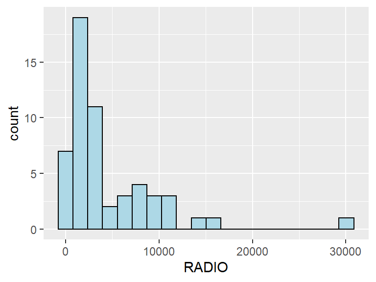
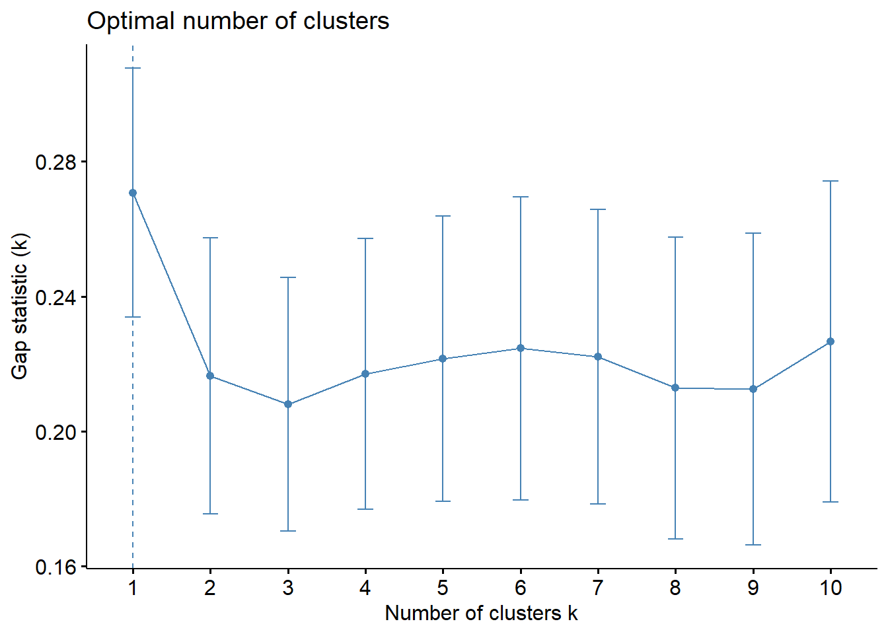
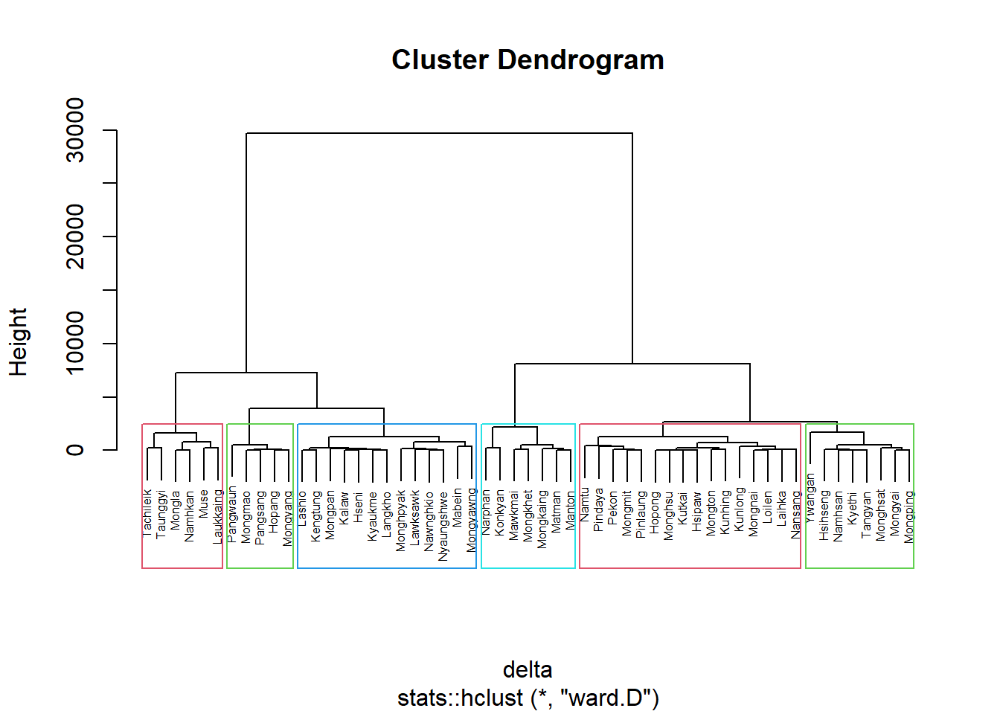
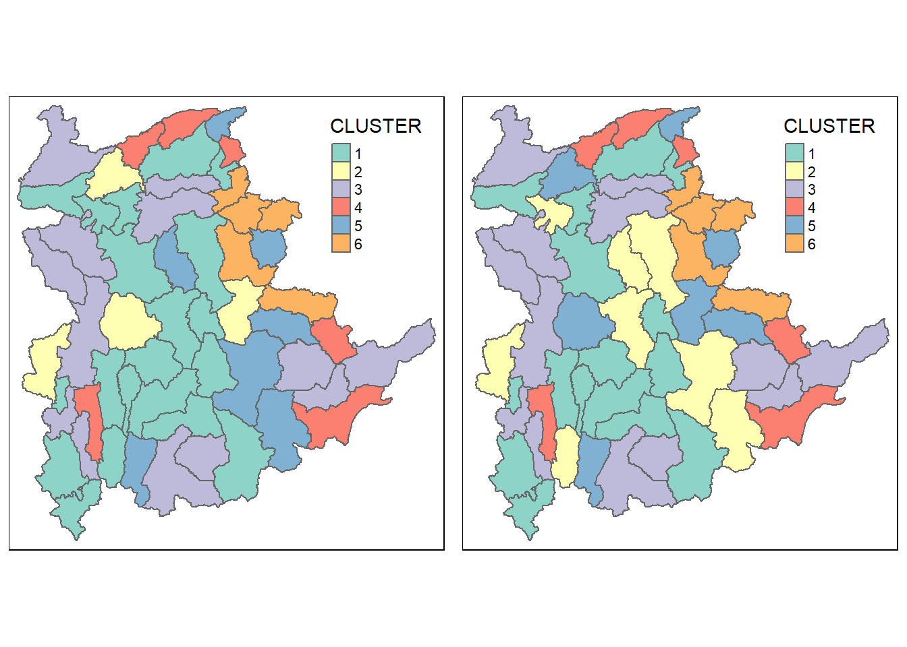
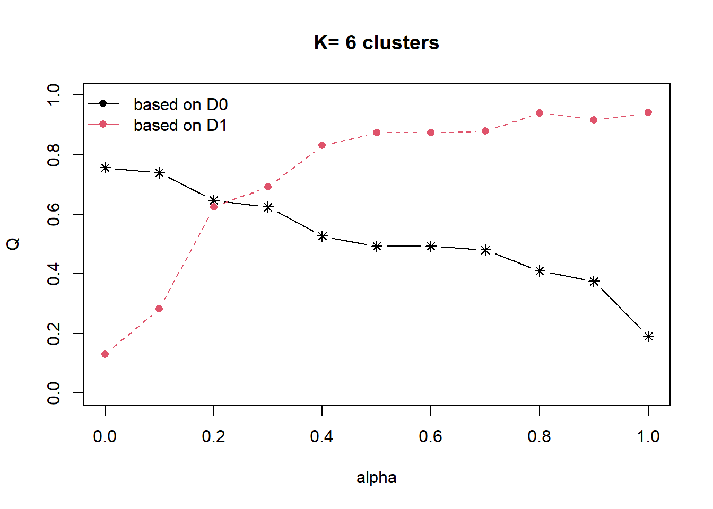
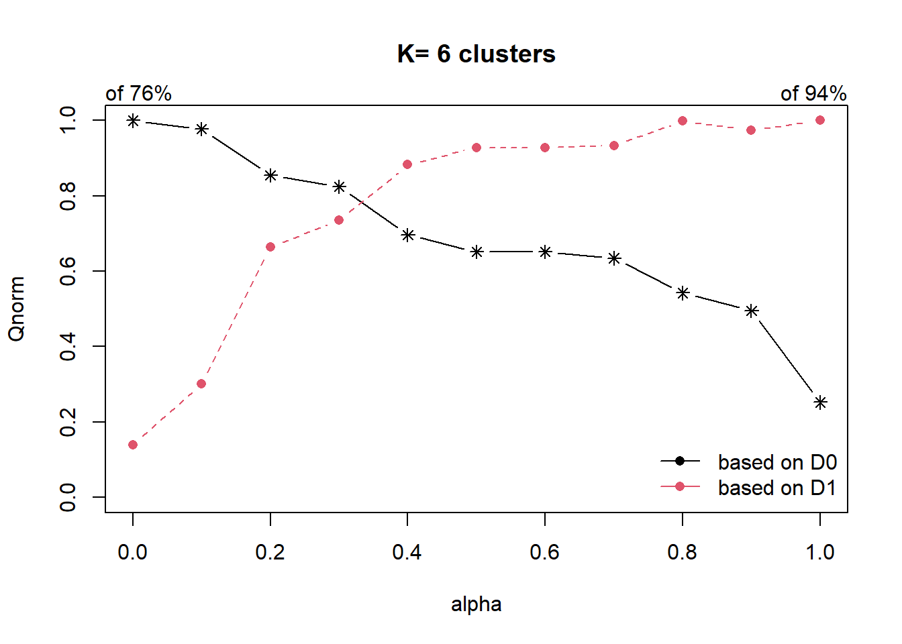
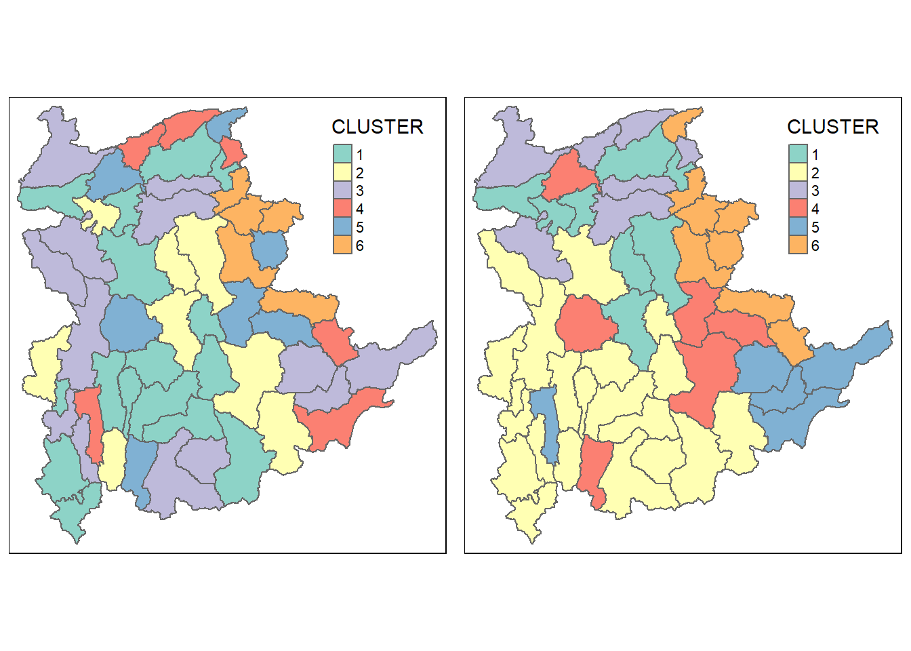

pacman::p_load(rgdal, spdep, tmap, sf,
ggpubr, cluster, factoextra, NbClust,
heatmaply, corrplot, psych, tidyverse, ClustGeo)In-class Exercise 3
Quarto 101
execute:
echo: false
Above is to by default not display any code chunks in the global environment, when keyed into the top part of the Quarto document.
Run-through of Hands-on Exercise 3
R packages
sf: do data import and export
rgdal: do transformation, change from 1 data type to another
spdep: used to create spanning trees (including SKATER)
- last week also used for computation of spatial autocorrelation, very rich package)
readr: reading of csv, read text data in and out of R
- if we want to read excel file (.xlsx), especially excel workbook with multiple worksheets -> should use readexcel
statistical packages -> use package called heaven (?) to bring into R
ggplot2: create plots for statistical methods
tmap: mapping device
coorplot: build correlation plot
ggpubr: glue up multiple
heatmaply: plotlib (?) version to do interactive heatmap in multidimension
clusterGeo: soft spatially constrained clustering algorithm package
factoextra: mainly for factor analysis, but also have a very nice visual for us to understand how the cluster change using the different clustering methods
PCA vs factor analysis: PCA rotation is 90 degrees so that newly transformed variables are as far as possible, factor analysis have other rotation methods such as value max (?)
NbClust: access hierarchical clustering results
Loading shapefile data
The Myanmar Township Boundary GIS data is in ESRI shapefile format. We can import it into the R environment using st_read() of sf. We also use the piping function %>% from dplyr and perform filter() to extract only the data for the Shan state. This is done in the code chunk below.
shan_sf <- st_read(dsn = "data/geospatial",
layer = "myanmar_township_boundaries") %>%
filter(ST %in% c("Shan (East)", "Shan (North)", "Shan (South)"))Reading layer `myanmar_township_boundaries' from data source
`C:\zhuyiting1\ISSS624\In-class_Ex\In-class_Ex3\data\geospatial'
using driver `ESRI Shapefile'
Simple feature collection with 330 features and 14 fields
Geometry type: MULTIPOLYGON
Dimension: XY
Bounding box: xmin: 92.17275 ymin: 9.671252 xmax: 101.1699 ymax: 28.54554
Geodetic CRS: WGS 84Have a habit of examining the data:
Polygon
Decimal degree format
WGS84
Click on file |>arrow in the Environment pane to check the variables (field name). Alternatively, use str() to show the field names.
To check the full data table, click on the object in the Environment pane. It includes all attribute values in the dbf file + geometry from shp file.
Setting CRS: important to change to projected CRS when doing distance-based weight matrix. Not required for contiguity-based weight matrix as the CRS does not affect the boundaries touching.
Code explained:
%>%: piping - glue different functions together
- As good practice, push the code after %>% to the next line for neatness.
Loading csv data
The csv file is imported using read_csv() of readr using the code chunk below.
ict <- read_csv("data/aspatial/Shan-ICT.csv")read_csv() of readr used instead of read.csv() of Base R
Former is a readr function -> retains the original field names.
- Use ` ` to encapsulate complete variable names with space
Latter changes the variable names by replacing and space with period.
Calculation of derived ICT penetration rates
ict_derived <- ict %>%
mutate(`RADIO_PR` = `Radio`/`Total households`*1000) %>%
mutate(`TV_PR` = `Television`/`Total households`*1000) %>%
mutate(`LLPHONE_PR` = `Land line phone`/`Total households`*1000) %>%
mutate(`MPHONE_PR` = `Mobile phone`/`Total households`*1000) %>%
mutate(`COMPUTER_PR` = `Computer`/`Total households`*1000) %>%
mutate(`INTERNET_PR` = `Internet at home`/`Total households`*1000) %>%
rename(`DT_PCODE`=`District Pcode`,`DT`=`District Name`,
`TS_PCODE`=`Township Pcode`, `TS`=`Township Name`,
`TT_HOUSEHOLDS`=`Total households`,
`RADIO`=`Radio`, `TV`=`Television`,
`LLPHONE`=`Land line phone`, `MPHONE`=`Mobile phone`,
`COMPUTER`=`Computer`, `INTERNET`=`Internet at home`) 6 new variables added to
ict_derivedusing mutate().x1000 -> in social science, usually the units are no. of handphones by per 1’000 households
Can x100 if computing % households with handphones.
rename() changes the variable names to match that of the shapefile to do join later (e.g. change from
Distinct PcodetoDT_PCODE.
Joining of data
We combine both sets of data into a single data.frame using left_join() of dplyr, which appends the second data.frame to the first based on the observations in the first. The shan_sf simple feature data.frame will be used as the base data object, so that the geometry is retained, and the ict_derived data.frame will be used as the join table.
shan_sf <- left_join(shan_sf,
ict_derived,
by=c("TS_PCODE"="TS_PCODE"))We need to define the variable names to join (
by=) , if we did not rename the variables to align them previously.
Visualisation methods
ggplot(data = shan_sf,
aes(x = `RADIO`)) +
geom_histogram(bins = 20,
color = "black",
fill = "light blue")
By using ggplot() directly without assigning it to an ouput object (e.g. plot1 <-), it is not saved and only shown when rendered (good for quick view). Assign to object if want to call it later.
If don’t want to run the code to plot the graph when rendering (set
#| eval: false), can find the html image file which is produced the first time the code chunk was rendered, and paste the code in the report :)
Correlation analysis
We use corrplot.mixed() of corrplot to visualise and analyse the correlation of the input variables, using the code chunk below.
cluster_vars.cor = cor(ict_derived[,12:17])
corrplot.mixed(cluster_vars.cor,
lower = "ellipse",
upper = "number",
tl.pos = "lt",
diag = "l",
tl.col = "black")
If ellipse is thin and colour is dark -> high correlation.
cor(ict_derived[,12:17])-> to pick out columns 12 to 17 only for data.frame and then plotting of correlation plot.
Cluster analysis
The code chunk below will be used to extract the clustering variables from the shan_sf simple feature object into data.frame.
cluster_vars <- shan_sf %>%
st_set_geometry(NULL) %>%
select("TS.x", "RADIO_PR", "TV_PR", "LLPHONE_PR", "MPHONE_PR", "COMPUTER_PR")
head(cluster_vars,10) TS.x RADIO_PR TV_PR LLPHONE_PR MPHONE_PR COMPUTER_PR
1 Mongmit 286.1852 554.1313 35.30618 260.6944 12.15939
2 Pindaya 417.4647 505.1300 19.83584 162.3917 12.88190
3 Ywangan 484.5215 260.5734 11.93591 120.2856 4.41465
4 Pinlaung 231.6499 541.7189 28.54454 249.4903 13.76255
5 Mabein 449.4903 708.6423 72.75255 392.6089 16.45042
6 Kalaw 280.7624 611.6204 42.06478 408.7951 29.63160
7 Pekon 318.6118 535.8494 39.83270 214.8476 18.97032
8 Lawksawk 387.1017 630.0035 31.51366 320.5686 21.76677
9 Nawnghkio 349.3359 547.9456 38.44960 323.0201 15.76465
10 Kyaukme 210.9548 601.1773 39.58267 372.4930 30.94709Use the select() function to extract the variables out (because we don’t need the rest).
st_set_geometry(Null)drops the geometric column so that it does not go into the data frame which does not work in the hierarchical clustering.
Next, we need to change the rows by township name instead of row number by using the code chunk below.
row.names(cluster_vars) <- cluster_vars$"TS.x"
head(cluster_vars,10) TS.x RADIO_PR TV_PR LLPHONE_PR MPHONE_PR COMPUTER_PR
Mongmit Mongmit 286.1852 554.1313 35.30618 260.6944 12.15939
Pindaya Pindaya 417.4647 505.1300 19.83584 162.3917 12.88190
Ywangan Ywangan 484.5215 260.5734 11.93591 120.2856 4.41465
Pinlaung Pinlaung 231.6499 541.7189 28.54454 249.4903 13.76255
Mabein Mabein 449.4903 708.6423 72.75255 392.6089 16.45042
Kalaw Kalaw 280.7624 611.6204 42.06478 408.7951 29.63160
Pekon Pekon 318.6118 535.8494 39.83270 214.8476 18.97032
Lawksawk Lawksawk 387.1017 630.0035 31.51366 320.5686 21.76677
Nawnghkio Nawnghkio 349.3359 547.9456 38.44960 323.0201 15.76465
Kyaukme Kyaukme 210.9548 601.1773 39.58267 372.4930 30.94709Now, we will delete the TS.x field (representing township) which is a duplicate of the row names now, by using the code chunk below.
shan_ict <- select(cluster_vars, c(2:6))
head(shan_ict, 10) RADIO_PR TV_PR LLPHONE_PR MPHONE_PR COMPUTER_PR
Mongmit 286.1852 554.1313 35.30618 260.6944 12.15939
Pindaya 417.4647 505.1300 19.83584 162.3917 12.88190
Ywangan 484.5215 260.5734 11.93591 120.2856 4.41465
Pinlaung 231.6499 541.7189 28.54454 249.4903 13.76255
Mabein 449.4903 708.6423 72.75255 392.6089 16.45042
Kalaw 280.7624 611.6204 42.06478 408.7951 29.63160
Pekon 318.6118 535.8494 39.83270 214.8476 18.97032
Lawksawk 387.1017 630.0035 31.51366 320.5686 21.76677
Nawnghkio 349.3359 547.9456 38.44960 323.0201 15.76465
Kyaukme 210.9548 601.1773 39.58267 372.4930 30.94709Do this to make a tidy data frame so that all the columns are just the variables for clustering analysis.
TS.xkept and shifted to row name instead of simply deleting because we need it later (displayed in the dendogram instead of just numbers).
Proximity matrix
The code chunk below is used to compute the proximity matrix using euclidean method.
proxmat <- dist(shan_ict, method = 'euclidean')proxmatValues represent the proximity matrix between towns in the top row and left-most column. The matrix is symmetrical along the diagonal. The value for the diagonal is 0.
Hierarchical clustering
The code chunk below performs hierarchical cluster analysis using ward.D method. The hierarchical clustering output is stored in an object of class hclust which describes the tree produced by the clustering process.
hclust_ward <- hclust(proxmat, method = 'ward.D')The code is simple as it only requires 2 arguments: the proximity matrix and the clustering method.
We can then plot the tree by using plot() of R Graphics as shown in the code chunk below.
plot(hclust_ward, cex = 0.6)
Both hclust() and plot() are of Base R (plot() from Base R Graphics), don’t need to tell plot() how to plot, it knows! :D
cex = 0.6scales the resolution to 60% of the full resolution. Useful when the dendogram looks too cluttered and the clusters cannot be read.
Finding Optimal Clustering Algorithm
The code chunk below will be used to compute the agglomerative coefficients of all hierarchical clustering algorithms.
m <- c( "average", "single", "complete", "ward")
names(m) <- c( "average", "single", "complete", "ward")
ac <- function(x) {
agnes(shan_ict, method = x)$ac
}
map_dbl(m, ac) average single complete ward
0.8131144 0.6628705 0.8950702 0.9427730 With reference to the output above, we can see that Ward’s method provides the strongest clustering structure among the four methods assessed. Hence, in the subsequent analysis, only Ward’s method will be used.
Highest value = most optimal model
Functional programming:
Want to run all four hierarchical clustering algorithms in 1 go -> create an object
mandnames(m)Then we define a function with the syntax
function(x){ }The function is to substitute each element (hierarchical clustering method) in the list
masmethod = xin the function for agnes() to compute agglomerative hierarchical clustering of the data set.Similar to looping in conventional programming.
Determining Optimal Cluster
To compute the gap statistic, clusGap() of cluster package will be used.
set.seed(1234)
gap_stat <- clusGap(shan_ict,
FUN = hcut,
nstart = 25,
K.max = 10,
B = 50)
# Print the result
print(gap_stat, method = "firstmax")Clustering Gap statistic ["clusGap"] from call:
clusGap(x = shan_ict, FUNcluster = hcut, K.max = 10, B = 50, nstart = 25)
B=50 simulated reference sets, k = 1..10; spaceH0="scaledPCA"
--> Number of clusters (method 'firstmax'): 1
logW E.logW gap SE.sim
[1,] 8.407129 8.677830 0.2707006 0.03692273
[2,] 8.130029 8.346462 0.2164322 0.04088387
[3,] 7.992265 8.200253 0.2079877 0.03762167
[4,] 7.862224 8.079170 0.2169462 0.04018998
[5,] 7.756461 7.977981 0.2215201 0.04229538
[6,] 7.665594 7.890134 0.2245409 0.04501316
[7,] 7.590919 7.812990 0.2220709 0.04364077
[8,] 7.526680 7.739537 0.2128575 0.04477188
[9,] 7.458024 7.670476 0.2124519 0.04623855
[10,] 7.377412 7.603947 0.2265346 0.04762720Also note that the hcut function used is from factoextra package.
Next, we can visualise the plot by using fviz_gap_stat() of factoextra package.
fviz_gap_stat(gap_stat)
If we follow the statistics strictly, 2 clusters would be the best. However, we know that we should not have less than 3 clusters as it is a multivariate analysis. Hence, by visual assessment, cluster numbers 5 and 6 may work better.
Mapping of Hierarchical Clusters
With closed examination of the dendragram above, we have decided to retain six clusters.
cutree() of Base R will be used in the code chunk below to derive a 6-cluster model.
groups <- as.factor(cutree(hclust_ward, k=6))In order to visualise the clusters, the groups object need to be appended onto shan_sf simple feature object.
The code chunk below form the join in three steps:
the
groupslist object will be converted into a matrix;cbind() is used to append
groupsmatrix ontoshan_sfto produce an output simple feature object calledshan_sf_cluster; andrename() of dplyr package is used to rename
as.matrix.groupsfield asCLUSTER.
shan_sf_cluster <- cbind(shan_sf, as.matrix(groups)) %>%
rename(`CLUSTER`=`as.matrix.groups.`)Next, qtm() of tmap package is used to plot the choropleth map showing the cluster formed.
qtm(shan_sf_cluster,"CLUSTER")
6 clusters plot -> good for visual
To convert it into map view, label it in
k = 6and make it into factorsUse rename() for tidying of field names when the matrix is combined with the geospatial data as the naming done by the cbind() function is not intuitive.
Converting to sp
First, we need to convert shan_sf into SpatialPolygonsDataFrame. This is because SKATER function only support sp objects such as SpatialPolygonDataFrame.
The code chunk below uses as_Spatial() of sf package to convert shan_sf into a SpatialPolygonDataFrame called shan_sp.
shan_sp <- as_Spatial(shan_sf)sf was developed after SKATER -> need to convert to sp object (spatial polygon) first. For doing calculation.
sp object has multiple tables -> separate the geometry from the rest (like shapefile, split into multiple files).
Use sf format when plotting with tmap functions.
ncuts = 5starts from 0 -> so there are 6 clusters.
New Chapter in Hand-on Exercise 3
9. Spatially Constrained Clustering ClustGeo Method
In this section, we gain hands-on experience on using functions of ClustGeo package to perform non-spatially constrained hierarchical cluster analysis and spatially constrained cluster analysis.
9.1. Ward-like Hierarchical Clustering: ClustGeo
ClustGeo package provides function called hclustgo() to perform a typical Ward-like hierarchical clustering, similar to hclust() of base R stats.
To perform non-spatially constrained hierarchical clustering, we only need to provide the function of a dissimilarity matrix, as shown in the code chunk below.
nongeo_cluster <- hclustgeo(proxmat)
plot(nongeo_cluster, cex = 0.5)
rect.hclust(nongeo_cluster,
k = 6,
border = 2 : 5)
Note that the dissimilarity matrix must be an object of class dist, i.e. an object obtained with the function dist().
9.2. Mapping the Clusters Formed
Similar to our Hands-on Exercise 3, we can plot the clusters on a categorical area shaded map by using the steps below.
groups <- as.factor(cutree(nongeo_cluster, k = 6))shan_sf_ngeo_clust <- cbind(shan_sf, as.matrix(groups)) %>%
rename(`CLUSTER` = `as.matrix.groups.`)Next, qtm() of tmap package is used to plot the choropleth map showing the cluster formed. We compare this (right plot) to the hierarchical clustering h formed by hclust() of base R stats (left plot).
hclust.map <- qtm(shan_sf_cluster,
"CLUSTER") +
tm_borders(alpha = 0.5)
hclustgeo.map <- qtm(shan_sf_ngeo_clust, "CLUSTER")
tmap_arrange(hclust.map, hclustgeo.map,
asp=NA, ncol=2)
We see that clusters 3, 4 and 6 are exactly the same across both methods. Furthermore, both plots show clusters that jump across different parts of Shan State geographically.
9.3. Spatially Constrained Hierarchical Clustering
Before we can perform spatially constrained hierarchical clustering, a spatial distance matrix will be derived by using st_distance() of sf package.
dist <- st_distance(shan_sf, shan_sf)
distmat <- as.dist(dist)Note that as.dist() is used to convert the data frame into a matrix.
Next, choicealpha() is used to determine a suitable value for the mixing parameter alpha, as shown in the code chunk below.
cr <- choicealpha(proxmat,
distmat,
range.alpha = seq(0, 1, 0.1),
K = 6,
graph = TRUE)

choicealpha()is for us to balance 2 matrices.Balance out the homogeneity in attributes space (D0) and geographical space (spatial, e.g Queen’s contiguity weight matrix) (D1).
Ranges from 0 to 1
0-stage = only considering attribute space without consideration of attribute homogeneity
1: spatial homogeneity
st_distance() takes the centroid of polygons
ClustGeo is more rigid in terms of algorithm - only accepts Ward
But more flexible in terms of being able to use either contiguity-based or distance-based weight matrix
seq(0, 1, 0.1): 0.1 = interval (increment) between 0 and 1 in the plotting
K = 6: Note that “K” in this argument is in upper case!! Different from hclust().2 graphs plotted
1st graph based on raw
2nd graph based on normalisation values -> if we find that our data is highly skewed. We will look at this in this exercise.
Helps us determine the optimal alpha value -> aim is to have as high Qnorm as possible
Based on 2nd graph: can either choose either alpha 0.2 or 0.3.
Sharp increase in spatial homogeneity with <20% drop in attribute homogeneity from 0.1 to 0.2 alpha value.
In practice, we should compare a few alpha values to see how the map changes.
With reference to the graphs above, alpha = 0.3 will be used as shown in the code chunk below.
clustG <- hclustgeo(proxmat, distmat, alpha = 0.3)Next, cutree() is used to derive the cluster object.
groups <- as.factor(cutree(clustG, k = 6))We will then join back the group list with shan_sf polygon feature data frame by using the code chunk below.
shan_sf_Gcluster <- cbind(shan_sf, as.matrix(groups)) %>%
rename(`CLUSTER` = `as.matrix.groups.`)We can now plot the map of the newly delineated spatially constrained clusters. We do so by comparing it (on the right plot) side-by-side with the Ward-like hierarchical clustering that we did earlier without considering the spatial component (on the left plot).
hclustgeo.map <- qtm(shan_sf_ngeo_clust, "CLUSTER")
hclustgeo0.3.map <- qtm(shan_sf_Gcluster, "CLUSTER")
tmap_arrange(hclustgeo.map, hclustgeo0.3.map,
asp=NA, ncol=2)
We see that now the clusters are no longer all over the place, but follows a more geospatial-related set of rules. At the same time, it is not completely geospatial either, with some clusters still spanning across different regions, e.g. cluster 4.
To interpret the clusters, we can use heatmaply() to study the features of each cluster, OR do a boxplot (summary statistics) to do so.